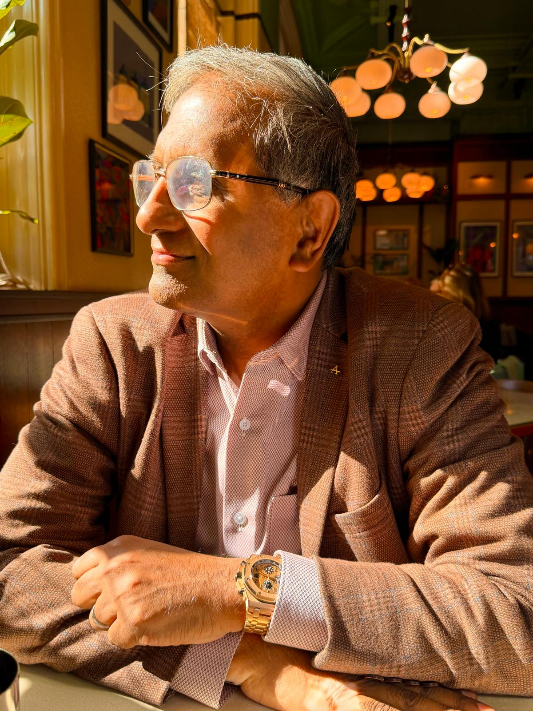

Your future health — is being decided right now.
The work and perspective of one of the UK's most experienced endocrinologists — and his growing interest in longevity and wellness.
Dr Arut is a UK Based Consultant Physician with more than 40 years in medicine and nearly two decades as a consultant in endocrinology, diabetes, obesity and metabolism. His work sits where hormones, metabolism and modern medical technology meet — and, increasingly, where medicine turns to a larger question: how the emerging science of longevity and wellness can help people stay genuinely well, for longer.
Every enquiry is warmly welcomed and handled with complete confidentiality.

Beyond treating illness — a deeper interest in how we live well, for longer.
Endocrinology is a specialty of connections. For a long career, Dr Arut has worked with the body's quiet regulators — the hormones and metabolic signals that decide how we grow, heal, store energy and age. Few clinicians spend so long watching how one system shapes another.
Much of that work has centred on weight, diabetes and metabolic health. He helped build obesity services across the region and the country, and shaped how a generation of physicians is trained to treat the condition — without judgement, and with the whole person in view.
Year after year, the same pattern surfaced. The forces that drive metabolic disease are also the forces that quietly decide how well, and how long, a person lives. Treating illness, he came to feel, was only half of medicine. The patients who stayed with him wanted something more — to remain strong, clear and capable for as many years as possible.
So his questions changed. Wellness was no longer a soft idea at the edge of practice; it was moving to the centre. Today that interest has a name — longevity — and a fast-moving science behind it, from metabolic health to the emerging study of peptides. He approaches it as he has approached everything else: curiosity held firmly in check by evidence, and honest about what is known and what is still being understood.
One thread now drawing his attention is the study of polypeptides for longevity — including injectable polypeptide approaches being explored in clinical trials and research laboratories. He is candid about their status: these are not FDA-approved treatments, but investigational methods still being tested for safety and benefit. He follows the work with the same evidence-led caution he brings to everything — interested in what rigorous research may reveal, and careful never to outrun it.
It is where his focus is turning now — and where this story continues.
I am drawn to working towards wellness — not simply treating disease. When we speak about longevity, it's not just about living, but living with the highest possible quality of life.
Dr Arut
Specialism across the systems that shape long-term health.
Endocrinology & Hormonal Health
Thyroid, pituitary, adrenal and gonadal disorders — the hormonal systems underpinning mood, metabolism, strength and vitality.
Obesity & Weight Medicine
National-curriculum-level expertise in modern, non-judgemental weight management.
Diabetes & Technology
Type 1 and type 2 diabetes, insulin pumps and hybrid closed-loop systems, with an interest in type 2 remission.
Bone Health & Osteoporosis
Assessment and management of bone density and fracture risk — for mobility, independence and strength.
Lipid & Metabolic Conditions
Advanced lipid management — including agents such as inclisiran and PCSK9-inhibitor therapy — and complex metabolic conditions.
Longevity & Wellness
A growing personal interest in living well for longer — explored with an evidence-led mindset.
Longevity isn't about more years — it's about more good ones.
We have spent a century learning how to add years to life. The more interesting question is what those years are made of.
That question sits at the heart of longevity. It is easy to assume the field is simply about living as long as possible. In truth it is about something more human — staying well, capable and fully ourselves for as much of life as we can.
A long life and a good life are not the same thing. Longevity is the quiet work of bringing the two closer together.
Lifespan, and the years that matter
Doctors draw a subtle but important distinction. Lifespan is how long we live. Healthspan is how long we live well — clear of the conditions that slowly narrow what we are able to do. For most people a gap opens between the two: years that are counted, but not fully lived. Across the world that gap now stretches to roughly a decade, and closing it has become the real ambition of longevity medicine.
Health is built long before it is lost
The forces that shape how we age are rarely dramatic. They are the ordinary rhythms of a life — how we eat and move, how we sleep, how our hormones and metabolism hold their balance across the years. No single day decides anything. Repeated across thousands of days, those small patterns quietly set the course.
It is why medicine is shifting its attention earlier. For generations, care has mostly meant waiting for something to break, then repairing it. The more valuable work, increasingly, happens upstream — noticing risk before it hardens into diagnosis, and protecting strength and function while they are still easy to protect.
An evolving science, read with care
Longevity medicine is young, and that is part of its appeal. Researchers are beginning to treat ageing not as a single inevitable event, but as a biology that can be measured and, perhaps, gently influenced. Promising as that is, it asks for discipline — because the same openness that makes the field exciting also leaves it open to claims that race ahead of the evidence.
Newer areas such as peptide science capture that tension well. A few are genuinely well studied; many remain experimental, carried more by enthusiasm than by long-term human data. The honest stance is curiosity tempered by caution — interested in what careful research reveals, unwilling to outrun what it has actually shown.
Good longevity care, then, is less about chasing the newest idea than about judgement: knowing what the evidence supports, what suits a particular person, and what is better left for time to test. It is this measured, personal approach that shapes the work explored across the rest of this site.
Two fields where Dr Arut's experience runs especially deep.
Weight & Metabolic Medicine
Few clinicians in the UK have shaped obesity medicine as directly. Since 2009, Dr Arut has led service development regionally and nationally and helped author the country's training curriculum in obesity. The defining feature of his approach is its tone: entirely non-judgemental, with the goal never being weight for its own sake — but improved health, confidence and quality of life.
Diabetes Care & Technology
Dr Arut leads an NHS insulin-pump service caring for more than 1,000 patients on hybrid closed-loop systems — supporting people through pregnancy, adolescence and adulthood alike. His aim is simple: that diabetes should never define, or limit, a life. He holds a particular interest in the reversal of type 2 diabetes and achieving lasting remission.
The qualifications behind the expertise.
Qualifications
- MD
- MRCP — Royal College of Physicians, London
- FRCP — Royal College of Physicians, London
- CCT (UK) — Endocrinology
- MSc — Health Care Leadership, NHS UK
- PGDME — Newcastle University, UK
- GMC Reg. 5195245
Appointments & Leadership
- Consultant Physician — Endocrinology, Diabetes, Obesity & Metabolism
- The James Cook University Hospital, Middlesbrough
- South East Hospitals NHS Foundation Trust
- Clinical Lead for Obesity — North East & Northumbria ICB
- Contributor — UK National Obesity Curriculum (GMC / JRCPTB)
- Published in peer-reviewed journals
A simple introduction, and an open invitation.
For now, this site is a straightforward introduction to Dr Arut and his work. He welcomes thoughtful conversation — with patients and colleagues, and with others working at the frontier of longevity, metabolic and wellness medicine. As his work in this area develops, more will be shared here.
Get in TouchClear, honest answers.
More than 40 years in medicine, paired with a whole-person view of health. Rather than treating conditions in isolation, Dr Arut considers how the body's hormonal and metabolic systems work together — focused not only on living longer, but on living well.
Endocrinology, diabetes, obesity and metabolism — with a growing interest in longevity and wellness.
A whole-person interest in living well for longer. Dr Arut follows this developing field with an evidence-led approach, rather than offering specific treatments through this site.
Use the enquiry form below, or email directly. Enquiries are welcome and treated in confidence.
Start a conversation.
Confidential, and without obligation.